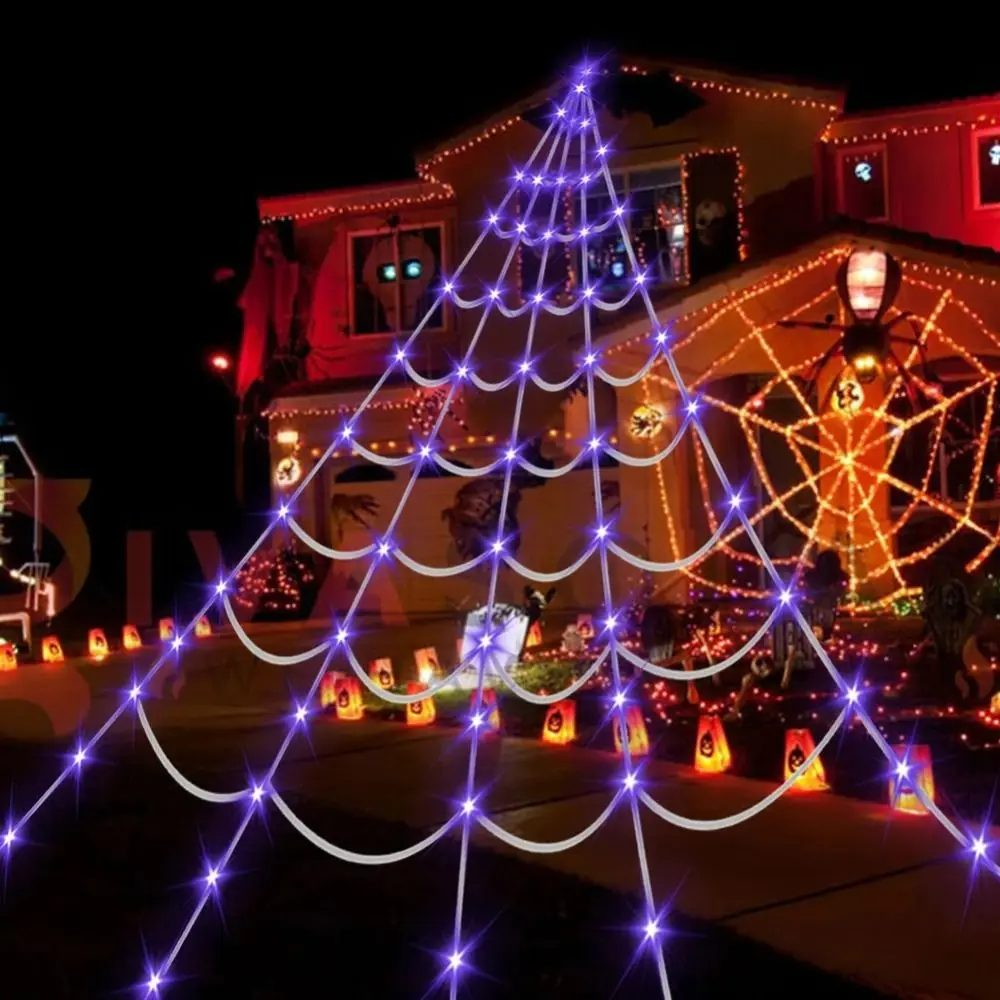

Planes para Halloween 2026: qué hacer según el plan que te apetezca

Halloween 2026 cae en sábado, así que este año no hay excusa: la noche del 31 es de fiesta completa. Estos son los planes que más se repiten en España, ordenados de más tranquilo a más intenso, con lo que hace falta para cada uno.
1. La casa decorada y la fiesta en casa
El plan que más gente hace y el que más fotos deja. Consiste en tres cosas: decorar la entrada (para que los que llegan ya vengan con la sonrisa puesta), una zona de fotos y dos o tres juegos. Si invitáis a más de ocho personas, la fiesta se organiza sola: solo hace falta que la casa "hable". Tenemos un artículo con 8 juegos para la fiesta y otro con 10 actividades; para la decoración, lo que de verdad cambia una casa son las piezas grandes: una tela negra de pared a pared, un esqueleto a tamaño real y una telaraña que se vea desde la calle.
2. Truco o trato por el barrio
Cada vez más barrios lo organizan por grupos de WhatsApp de vecinos o del colegio. Lo que funciona: fijar una hora (de 18 a 20 suele ser lo normal con niños), una señal en las casas que participan (una calabaza en la puerta o la telaraña con luces encendida) y un punto de encuentro al final para los padres. Los niños recuerdan más la casa que daba miedo que los caramelos.
3. Pasajes del terror y casas encantadas
Casi todas las ciudades tienen alguno en las últimas dos semanas de octubre: los organizan asociaciones, ayuntamientos, centros comerciales y escape rooms. Se llenan, así que hay que reservar con una o dos semanas de antelación. Van bien para grupos de amigos de 4 a 8 personas; con niños pequeños, mejor los "pasajes light" que anuncian las mismas organizaciones por la tarde.
4. Parques de atracciones en modo Halloween
Los grandes parques (en Cataluña, Madrid y la Comunidad Valenciana) montan cada octubre una temporada de Halloween con pasajes del terror, personajes por las calles y horario nocturno. Es el plan de día completo: hay que comprar la entrada con antelación y llegar disfrazado, porque la mitad de la gracia es ver a todo el mundo con disfraz. Consejo: un disfraz cómodo, que aguante 8 horas y muchas fotos. El médico de la peste cumple las tres cosas y no necesita maquillaje.
5. Fiestas en locales y discotecas
Para los mayores de 18: la mayoría de locales hacen fiesta temática el 31 y el fin de semana anterior, con concurso de disfraces. Aquí el disfraz es obligatorio y el que más se lleva es el que se reconoce de lejos y no molesta para bailar. Alas, máscara y capa: cosas que se ponen y se quitan.
6. Noche tranquila de cine en casa
El plan de los que no quieren salir: luz apagada, mantas, palomitas y dos películas (una de risa y una de miedo, en ese orden). Tenemos la lista de 12 películas ordenadas de menos a más miedo, y una sección de cómo montar la sala en 10 minutos.
Cómo elegir
- Con niños pequeños: 1 o 2.
- Con adolescentes: 3 o 4.
- Con amigos: 1, 3, 4 o 5.
- En pareja: 6, o 4 si os gustan las colas.
Sea cual sea el plan, hay una cosa que se repite: la foto. Reservad diez minutos antes de salir o de que llegue la gente para hacerla con buena luz. Es lo que queda.
Lo que sale en este artículo

Telaraña gigante con 250 luces LED
5 metros de telaraña con luces moradas, 8 modos de luz, para fachada, balcón o jardín

Kit casa del terror
Tela negra gigante + esqueleto articulado + telaraña luminosa

Máscara y capa de médico de la peste
Disfraz completo de talla única: máscara de pico, capa con capucha y sombrero